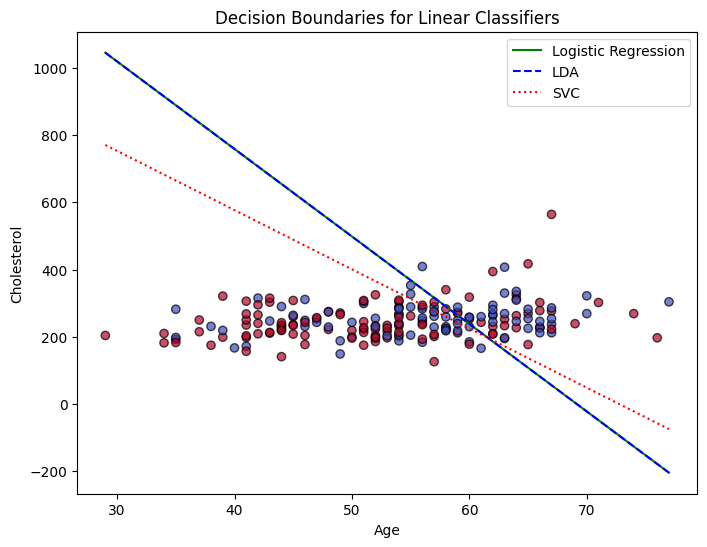

import pandas as pdThe Data
At this link, you will find a dataset containing information about heart disease patients: https://www.dropbox.com/scl/fi/0vrpdnq5asmeulc4gd50y/ha_1.csv?rlkey=ciisalceotl77ffqhqe3kujzv&dl=1
A description of the original dataset can be found here: https://archive.ics.uci.edu/dataset/45/heart+disease (However, this dataset has been cleaned and reduced, and the people have been given fictious names.)
heart = pd.read_csv("https://www.dropbox.com/scl/fi/0vrpdnq5asmeulc4gd50y/ha_1.csv?rlkey=ciisalceotl77ffqhqe3kujzv&dl=1")
heart.head()| Name | age | sex | cp | trtbps | chol | restecg | thalach | diagnosis | |
|---|---|---|---|---|---|---|---|---|---|
| 0 | Magnolia Cassin | 60 | 1 | 1 | 117 | 230 | 1 | 160 | No Disease |
| 1 | Dr. Cathern Heathcote | 60 | 0 | 3 | 102 | 318 | 1 | 160 | Disease |
| 2 | Miles Wolf | 62 | 0 | 3 | 130 | 263 | 1 | 97 | No Disease |
| 3 | Mikaila Block | 43 | 1 | 1 | 115 | 303 | 1 | 181 | Disease |
| 4 | Mrs. Jacquline Marquardt | 66 | 1 | 1 | 120 | 302 | 0 | 151 | Disease |
pip install sklearnCollecting sklearn Using cached sklearn-0.0.post12.tar.gz (2.6 kB) error: subprocess-exited-with-error × python setup.py egg_info did not run successfully. │ exit code: 1 ╰─> See above for output. note: This error originates from a subprocess, and is likely not a problem with pip. Preparing metadata (setup.py) ... error error: metadata-generation-failed × Encountered error while generating package metadata. ╰─> See above for output. note: This is an issue with the package mentioned above, not pip. hint: See above for details.
from sklearn.pipeline import Pipeline
from sklearn.neighbors import KNeighborsClassifier
from sklearn.tree import DecisionTreeClassifier
from sklearn.linear_model import LogisticRegression1. Logistic Regression
Fit a Logistic Regression using only age and chol (cholesterol) as predictors.
For a 55 year old, how high would their cholesterol need to be for the doctors to predict heart disease is present?
How high for the doctors to estimate a 90% chance that heart disease is present?
X = heart[["age", "chol"]]
y = heart["diagnosis"]logit = LogisticRegression()
logit.fit(X, y)LogisticRegression()In a Jupyter environment, please rerun this cell to show the HTML representation or trust the notebook.
On GitHub, the HTML representation is unable to render, please try loading this page with nbviewer.org.
LogisticRegression()
b0 = logit.intercept_[0]
b1, b2 = logit.coef_[0]
print("Intercept:", b0)
print("age coefficient:", b1)
print("chol coefficient:", b2)Intercept: -3.240112258859206
age coefficient: 0.04686330613037214
chol coefficient: 0.0018012385190290258age = 55
chol_cutoff = -(b0 + b1*age)/b2
print("cholestorol cutoff:",chol_cutoff)cholestorol cutoff: 367.8748897985677log_odds_target = np.log(0.9/0.1)
chol_90 = -(b0 + b1*age - log_odds_target)/b2
print("to estimate 90% heart disease, cholesterol:", chol_90)to estimate 90% heart disease, cholesterol: 1587.7158792754382. Linear Discriminant Analysis
Fit an LDA model using only age and chol (cholesterol) as predictors.
For a 55 year old, how high would their cholesterol need to be for the doctors to predict heart disease is present?
from sklearn.discriminant_analysis import LinearDiscriminantAnalysis
import numpy as nplda = LinearDiscriminantAnalysis()
lda.fit(X, y)LinearDiscriminantAnalysis()In a Jupyter environment, please rerun this cell to show the HTML representation or trust the notebook.
On GitHub, the HTML representation is unable to render, please try loading this page with nbviewer.org.
LinearDiscriminantAnalysis()
b1, b2 = lda.coef_[0]
b0 = lda.intercept_[0]
print("Intercept:", b0)
print("age coefficient:", b1)
print("chol coefficient:", b2)Intercept: -3.2196776604068784
age coefficient: 0.04655743553694484
chol coefficient: 0.0017896671039291314age = 55
chol_cutoff_lda = -(b0 + b1*age)/b2
print("to prevent heart diseease, cholesterol:", chol_cutoff_lda)to prevent heart diseease, cholesterol: 368.2353575299383. Support Vector Classifier
Fit an SVC model using only age and chol as predictors. Don’t forget to tune the regularization parameter.
For a 55 year old, how high would their cholesterol need to be for the doctors to predict heart disease is present?
from sklearn.svm import SVC
from sklearn.model_selection import GridSearchCV, StratifiedKFoldsvc = SVC(kernel="linear")svc.fit(X, y)SVC(kernel='linear')In a Jupyter environment, please rerun this cell to show the HTML representation or trust the notebook.
On GitHub, the HTML representation is unable to render, please try loading this page with nbviewer.org.
SVC(kernel='linear')
print("Intercept:", svc.intercept_)
print("Coefficients:", svc.coef_)Intercept: [-4.68603406]
Coefficients: [[0.06439772 0.00365896]]w0 = -4.68603406
w1 = 0.06439772
w2 = 0.00365896
age = 55
chol_cutoff = -(w0 + w1 * age) / w2
print("cholestorol cutoff should be:", chol_cutoff)cholestorol cutoff should be: 312.700729168944064. Comparing Decision Boundaries
Make a scatterplot of age and chol, coloring the points by their true disease outcome. Add a line to the plot representing the linear separator (aka decision boundary) for each of the three models above.
heart["diagnosis"] = heart["diagnosis"].map({'No Disease': 0, 'Disease': 1})
heart| Name | age | sex | cp | trtbps | chol | restecg | thalach | diagnosis | |
|---|---|---|---|---|---|---|---|---|---|
| 0 | Magnolia Cassin | 60 | 1 | 1 | 117 | 230 | 1 | 160 | 0 |
| 1 | Dr. Cathern Heathcote | 60 | 0 | 3 | 102 | 318 | 1 | 160 | 1 |
| 2 | Miles Wolf | 62 | 0 | 3 | 130 | 263 | 1 | 97 | 0 |
| 3 | Mikaila Block | 43 | 1 | 1 | 115 | 303 | 1 | 181 | 1 |
| 4 | Mrs. Jacquline Marquardt | 66 | 1 | 1 | 120 | 302 | 0 | 151 | 1 |
| ... | ... | ... | ... | ... | ... | ... | ... | ... | ... |
| 199 | Bridgett Franecki | 55 | 0 | 1 | 128 | 205 | 2 | 130 | 0 |
| 200 | Mr. Foster Zieme | 51 | 1 | 3 | 94 | 227 | 1 | 154 | 1 |
| 201 | Lashanda Hagenes | 42 | 1 | 2 | 120 | 295 | 1 | 162 | 1 |
| 202 | Levern Trantow III | 35 | 0 | 1 | 138 | 183 | 1 | 182 | 1 |
| 203 | Mahalia DuBuque DVM | 34 | 1 | 4 | 118 | 182 | 0 | 174 | 1 |
204 rows × 9 columns
ages = np.linspace(heart["age"].min(), heart["age"].max(), 100)
logit_line = -(b0 + b1*ages)/b2
lda_line = -(lda.intercept_[0] + lda.coef_[0,0]*ages)/lda.coef_[0,1]
svc_line = -(svc.intercept_[0] + svc.coef_[0,0]*ages)/svc.coef_[0,1]plt.figure(figsize=(8,6))
plt.scatter(heart["age"], heart["chol"], c=heart["diagnosis"], cmap="coolwarm", edgecolor="k", alpha=0.7)
plt.plot(ages, logit_line, color="green", label="Logistic Regression")
plt.plot(ages, lda_line, color="blue", linestyle="--", label="LDA")
plt.plot(ages, svc_line, color="red", linestyle=":", label="SVC")
plt.xlabel("Age")
plt.ylabel("Cholesterol")
plt.title("Decision Boundaries for Linear Classifiers")
plt.legend()
plt.show()